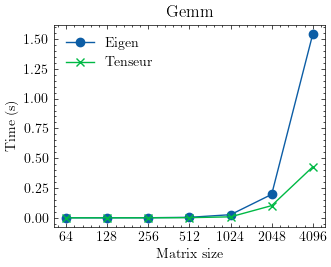
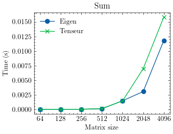
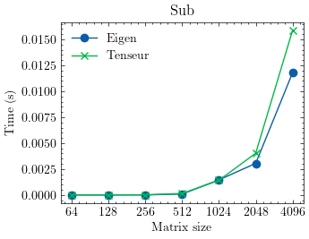
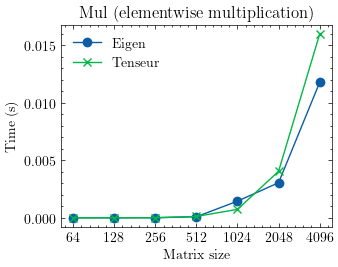

Tenseur is a header only c++ numerical library. It’s designed to provide high-performance linear algebra and multilinear algebra operations by laveraging the capabilities of BLAS (Basic Linear Algebra Subprograms) and SIMD (Single Instruction, Multiple Data) backends. This library, currently in development, aims to offer a robust framework for numerical computations focusing on both performance and easy of use. The code is available on Github. In this blog post, we will first describe some design decisions. Then we will show some of its features and advantages over other libraries.
Lazy evaluation
First, let’s explore lazy evaluation of expressions. Lazy evaluation means that expressions are not computed immediately. Instead, they are evaluated only when necessary. This approach can lead to significant performance improvement.
Expression template
Expression template is a powerful technique that enables representing mathematical expression as types. This allows for compile-time optimizations. The compiler can analyze the expressions and generated efficient code.
Combining lazy evaluation and expression templates
One of the design decisions of Tenseur is to combine both lazy evaluation and expression templates. By combining these two features, the library can execute complex mathematical expressions with minimal runtime overhead. Here are some of the advantages regarding these two features:
- Deferred execution: The expressions are not calculated automatically. Instead, they are described by a templated object. The actual computation happens only when required by calling a method called
eval()that returns the evaluated expression. - Performance optimization: Many unecessary computations are avoided by stopping computations.
- Expression composition: The library construct an expression graph that is evaluated recursively when a result is needed.
- Memory efficiency: The overall memory footprint is reduced by not storing intermediate results except when they are needed.
- Compatibility and assignment from expressions: Combining these two techniques allow the compiler to optimize the execution of expressions more efficiently. It also makes it possible to assign a tensor from an expression.
Here’s a step by step description of how expresions and templates metaprogramming are combined in C++ to create lazy evaluation of expressions:
- Define expression class, this is a base class for all expressions.
/// Represent an expression
template <typename Derived> class expr {
protected:
expr() = default;
expr(const expr &) = default;
expr(expr &&) = default;
};
- Define expressions: adding, sub, mult, div. An example for adding expression is described below:
template <typename left_expr, typename right_expr>
requires ::ten::is_expr<std::remove_cvref_t<left_expr>> &&
::ten::is_expr<std::remove_cvref_t<right_expr>>
auto operator+(left_expr &&left, right_expr &&right) {
using L = std::remove_cvref_t<left_expr>;
using R = std::remove_cvref_t<right_expr>;
return ::ten::binary_expr<
typename L::node_type, typename R::node_type,
::ten::functional::binary_func<::ten::binary_operation::add>::func>(
left.node(), right.node());
}
template <typename T, typename E>
requires ::ten::is_expr<std::remove_cvref_t<E>> &&
std::is_floating_point_v<T>
auto operator+(T &&scalar, E &&expr) {
using R = std::remove_cvref_t<E>;
return ::ten::scalar<T>(scalar) + std::forward<R>(expr);
}
template <typename E, typename T>
requires ::ten::is_expr<std::remove_cvref_t<E>> &&
std::is_floating_point_v<T>
auto operator+(E &&expr, T &&scalar) {
using R = std::remove_cvref_t<E>;
return std::forward<R>(expr) + ::ten::scalar<T>(scalar);
}
- Define a scalar node and a scalar type
/// \class scalar_operations
template <class T> struct scalar_operations {
[[nodiscard]] inline static constexpr size_type rank() { return 0; }
};
/// \class scalar_node
/// Node of scalar type
template <typename __t>
class scalar_node : public scalar_operations<scalar_node<__t>> {
...
};
/// \class scalar
/// Hold a single value of type __t.
template <typename __t>
class scalar : public expr<scalar<__t>>, public scalar_operations<scalar<__t>> {
...
};
- Define a tensor node and a tensor type
/// \class tensor_operations
/// Tensor operations
template <class __t, class shape, storage_order order, class storage,
class allocator>
struct tensor_operations {
...
};
/// \class tensor_node
/// Tensor node
template <class __t, class __shape, storage_order __order, class __storage,
class __allocator>
class tensor_node
: public tensor_operations<__t, __shape, __order, __storage, __allocator> {
...
};
/// Tensor represented by a multidimentional array.
template <class __t, class __shape, storage_order __order = default_order,
class __storage = default_storage<__t, __shape>,
class __allocator = typename details::allocator_type<__storage>::type>
class ranked_tensor final
: public ::ten::expr<
ranked_tensor<__t, __shape, __order, __storage, __allocator>>,
public ::ten::tensor_operations<__t, __shape, __order, __storage,
__allocator>,
public ::ten::tensor_base {
...
};
- Define a unary node and unary expression
// \class unary_node
// Apply a function to a ten::Tensor or a ten::Scalar
template <class __input, class __output, template <typename...> class __func,
typename... __args>
class unary_node {
...
};
/// \class unary_expr
/// Unary expression.
template <typename __expr, template <class...> class __func, typename... __args>
class unary_expr : ::ten::expr<unary_expr<__expr, __func, __args...>> {
...
};
The unary expression holds a shared pointer to a unary node.
- Define a binary node and binary expression
// \class binary_node
// Node of a binary expresion
// Left and Right can be scalar_node, tensor_node or binary_node
template <class __left, class __right, class __output,
template <typename...> class __func, typename... __args>
class binary_node {
...
};
/// \class binary_expr
/// Binary expression
// left and right can be scalar_node, tensor_node or binary_expr
// left is std::shared_ptr<__left> and right is std::shared_ptr<__right>
template <typename __left, typename __right, template <typename...> class __func,
typename... __args>
class binary_expr : ::ten::expr<binary_expr<__left, __right, __func, __args...>> {
...
};
The binary expresion holds a shared pointer to a binary node.
- Define useful aliases. Here a vector and a matrix. Other aliases like static tensor, static vector, static matrix and diagonal matrix are defined.
// vector<__t>
template <class __t, storage_order __order = default_order,
class __storage = default_storage<__t, shape<::ten::dynamic>>,
class __allocator = typename details::allocator_type<__storage>::type>
using vector =
ranked_tensor<__t, shape<::ten::dynamic>, __order, __storage, __allocator>;
// matrix<__t> or matrix<__t, __shape>
template <class __t, class __shape = dynamic_shape<2>,
storage_order __order = default_order,
class __storage = default_storage<__t, __shape>,
class __allocator = typename details::allocator_type<__storage>::type>
requires(__shape::rank() == 2)
using matrix = ranked_tensor<__t, __shape, __order, __storage, __allocator>;
SIMD
The library support SIMD operations for addition, multiplication, substraction and division. By using SIMD instructions, it can process multiple data points in parallel, significantly speeding up computations. The simd backend implementation is available at Simd backend.
BLAS
The BLAS backend allow users to take advantages of highly optimized routines for vector and matrix operations that are tuned for various architectures. This is particularly benefical for large-scale matrix operations, where reference methods may perform very poorly. The blas backend implementations are available at Blas API.
Allocator
An allocator manages memory allocation and deallocation. Allocators are crucial for efficient memory management. They also help ensure that memory is used effectively and that ressources are freed when they are no longer necessary. Tenseur uses std::allocator under the hood for aligned memory allocation. it’s implemented in the following link : Dense storage.
Examples
- Create a tensor with uninitialized memory
ten::tensor<float, 3> a({2, 3, 4});
ten::matrix<float> b({2, 3});
ten::vector<float> c({5});
- Create a static tensor with uninitialized memory
ten::stensor<float, 2, 3, 4> a;
ten::smatrix<float, 2, 3> b;
ten::svector<float, 5> c;
- Create a tensor of zeros
auto x = ten::zeros<ten::tensor<float, 3>>({2, 3, 4});
- Create a tensor filled with values
auto x = ten::fill<ten::tensor<float, 2>>({2, 3}, 0.1);
- Reshape a matrix
auto x = ten::range<ten::matrix<float>>({2, 3});
auto y = ten::reshape<2>(x, {3, 2});
// y is an expression, it can be evaluated
auto z = y.eval();
- Flatten a tensor
auto x = ten::range<ten::tensor<float, 3>>({2, 3, 4});
ten::vector<float> b = ten::flatten(a);
- Random numbers generation
size_t seed = 1234;
auto x = ten::rand<ten::smatrix<float, 2, 3>>(seed);
auto y = ten::rand<ten::matrix<float>>({2, 3}, seed);
auto z = ten::rand<ten::vector<float, 3>>({2, 3, 4}, seed);
- col major and row major tensors
ten::tensor<float, 3, ten::storage_order::col_major> x({2, 3, 4});
cout << "shape = " << x.shape() << endl;
cout << "strides = " << x.strides() << endl;
ten::tensor<float, 3, ten::storage_order::row_major> y({2, 3, 4});
cout << "shape = " << y.shape() << endl;
cout << "strides = " << y.strides() << endl;
- Matrix multiplication
auto a = ten::range<ten::matrix<float>>({2, 3});
auto b = ten::range<ten::matrix<float>>({3, 4});
auto c = (a * b).eval();
- Chaining expressions
auto a = ten::range<ten::vector<float>>(5);
auto b = 2. * a;
auto c = ten::sqrt(b);
auto d = (c + a).eval();
Performance
The library is optimized for vector and matrix operations providing excellent performance in many cases. Here are some benchmarks against Eigen:
- Generalized matrix multiplication

- Vector addition

- Vector substraction

- Elementwise vector division
- Elementwise vector multiplication

Future plans
The library is currently under active development. With its combination of lazy evaluation, template expressions, and advanced BLAS and SIMD backends, it stands to make a significant impact on the landscape of numerical linear algebra in C++. Some of the future plans are:
- Compile to a shared library
- Generate automatic python bindings
- Pythonizations
- Sparse tensors
- More special matrices
- Automatic differentiation
- Documentation